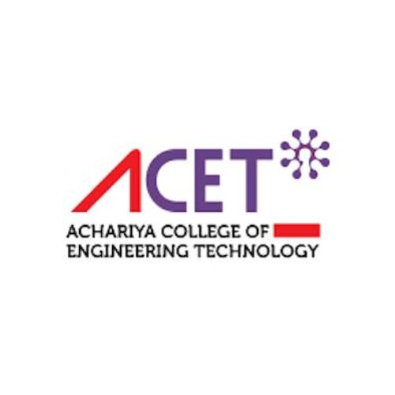

01
MEMORANDUM OF UNDERSTANDING

Achariya College of Engineering Technology
We are pleased to announce that SHA Innovative Technologies has signed a Memorandum of Understanding (MoU) with Achariya College of Engineering Technology. This collaboration aims to bridge the gap between academia and industry by offering students valuable opportunities in skill development, hands-on training, internships, and real-world industry exposure. Through this partnership, we look forward to empowering students, enhancing their employability, and fostering career-focused learning initiatives that prepare them for the future.